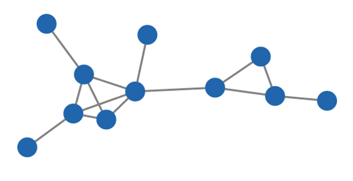

This is an example of a network diagram.

The nodes (circles) represent the objects of the network and the links (lines) represent the relationships between these objects.
Connected components of a network are subsets of nodes, where any node in the subset is reachable from every other node within the same subset.
The network above has two connected components.
If we added a link between these two connected components, then we have one connected component, as shown below.
Similar to connected components, networks can have 2-connected components.
2-connected components are the subset of nodes that have at least two paths to every other node within the subset.
2-connected components are also 1-connected.

The network above has two 2-connected components, which are highlighted.

Let's consider the 2-connected component on the right.
All the nodes in the highlighted subset have at least two paths to every other node within this subset.
If we consider these two nodes

they are connected by this path

and also this path

similarly if we consider these two nodes

they are connected by at least two paths


However these two nodes only have one path to each other and are not part of any 2-connected component.